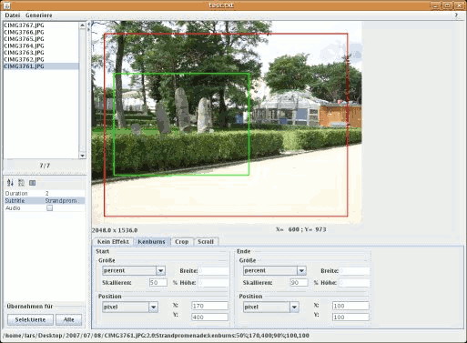

dvd-slideshow
Dieser Artikel wurde für die folgenden Ubuntu-Versionen getestet:
Ubuntu 16.04 Xenial Xerus
Ubuntu 14.04 Trusty Tahr
Zum Verständnis dieses Artikels sind folgende Seiten hilfreich:
 dvd-slideshow
dvd-slideshow  ist ein Paket von Kommandozeilen-Programmen, welche sich zur Erstellung einer Diashow ("Slideshow") aus Einzelbildern eignen. Die Diashow wird als DVD-kompatibles MPEG2-Video gespeichert. Es können auch komplette Ordner mit Bildern in den Formaten JPG und PNG verarbeitet werden. Folgende Effekte sind verfügbar:
ist ein Paket von Kommandozeilen-Programmen, welche sich zur Erstellung einer Diashow ("Slideshow") aus Einzelbildern eignen. Die Diashow wird als DVD-kompatibles MPEG2-Video gespeichert. Es können auch komplette Ordner mit Bildern in den Formaten JPG und PNG verarbeitet werden. Folgende Effekte sind verfügbar:
Crossfading
Untertitel
Ken-Burns-Effekt (Zoom und Bewegung des Bildes zur gleichen Zeit)
Crop und Scroll (zum Beispiel für Panoramabilder)
eine oder mehrere Audiospuren hinzufügen (mögliche Formate: MP3, OGG, WAV)
Im Paket enthalten sind die Programme bzw. Shell-Skripte:
dvd-slideshow- erzeugt das Videodir2slideshow- erzeugt aus einem Verzeichnis mit Bildern ein Input-File für dvd-slideshowdvd-menu- erzeugt ein Menü für die fertige DVDgallery2slideshowundjigl2slideshow- erzeugen aus einem Online-Fotoalbum unter Verwendung von Gallery bzw. jigl ein Input-File für dvd-slideshow
Hinweis:
Je nach Ubuntu-Version müssen bestimmte manuelle Anpassungen vorgenommen werden, bevor dvd-slideshow rund läuft. Weitere Informationen gibt es in dieser Diskussion.
Installation¶
Folgendes Paket muss installiert werden [1]:
dvd-slideshow (multiverse)
 mit apturl
mit apturl
Paketliste zum Kopieren:
sudo apt-get install dvd-slideshow
sudo aptitude install dvd-slideshow
Schnelleinstieg¶
Wer nicht erst in die Tiefen der Programme eintauchen möchte, kann eine Slideshow ganz schnell und einfach mit folgenden Befehlen erstellen [2]:
cd <Verzeichnis mit Bildern> dir2slideshow -t 5 -c 2 -n Input-slideshow . dvd-slideshow -n Video -p -f Input-slideshow.txt # optional für dvd-slideshow: -smp (Multicore-CPU-Unterstützung) und -a <Audiofile> (Soundtrack zum Video) dvd-menu -f Video.xml -p -iso
Danach hat man in diesem Verzeichnis das ISO-Image dvd.iso zum Brennen einer DVD zur Verfügung.
Die gebrannte DVD spielt beim Einlegen in den DVD-Player die Diashow sofort (d.h. ohne Menü). Falls die Option -a übergeben wurde, ist die Diashow mit Ton unterlegt.
Vorbereitung der Bilder¶
Das Programm dvd-slideshow beachtet keine Exif-Informationen zur Ausrichtung der Bilder, welche beispielsweise in JPG-Bildern von der Kamera gespeichert werden. Dies hat zur Folge, dass Fotos, die im Dateimanager richtig herum dargestellt bzw. automatisch gedreht werden, auf einmal im Film um 90 Grad gekippt sind. Abhilfe schafft das Programm JHead. Folgender Befehl richtet Bilder mit Rotationsdirektive korrekt aus, dvd-slideshow verwertet sie richtig, und im Film ist alles richtig herum.
jhead -autorot *.jpg
Programme benutzen¶
dir2slideshow¶
Zum einfachen Erstellen eines Input-Files für dvd-slideshow eignet sich der Befehl dir2slideshow. Man wechselt innerhalb eines Terminalfensters in ein Verzeichnis mit Bildern und gibt folgenden Befehl ein [2]:
dir2slideshow -t ANZEIGEDAUER_PRO_BILD -n INPUT-FILE [OPTIONEN] BILDERORDNER
Eine vollständige Liste der möglichen Optionen findet man in der Manpage von dir2slideshow. Hier sind die interessantesten Optionen aufgelistet:
| Optionen für dir2slideshow | |
| dir2slideshow-Option | Beschreibung |
-n Name | Name des Inputfiles, das Input-File für dvd-slideshow wird als <Name des Inputfiles>.txt erzeugt |
-o <Verzeichnis> | Verzeichnis, in dem das Inputfile erzeugt wird (default: aktuelles Verzeichnis) |
-t Zeit | Anzeigedauer jedes Bildes (default: 5s) |
-c Zeit | Crossfade: Dauer des Überblendens zwischen zwei Bildern |
-s Untertitel | Erzeugt einen Untertitel in jedem Bild. Achtung: Leerzeichen als "\ " eingeben! |
-T / -M | Sortierung anhand der Aufnahmezeit aus den Metadaten der Bilder / der Änderungszeit des Files |
-notitle | Verhindert die Erzeugung eines Titelbildes mit dem Namen der Slideshow |
Danach steht die Datei INPUT_FILE.txt im Ausgabeverzeichnis zur Verfügung.
Interessante Ergänzungen sind z.B. folgende:
musictitle:Anzeigedauer:Untertitel:Titel:Artist;Albumerzeugt ein schwarzes Bild mit Angaben zum Soundtrack an der gewählten Stelle in der Diashow (Semikolon zwischen Artist und Album beachten!). Die Daten werden nicht aus den Tags der Musikdateien gelesen, sondern müssen explizit angegeben werden!
chaptererzeugt Kapitelmarkierungen an den angegebenen Stellen. Wenn diese Zeile nicht im Inputfile auftaucht, wird nach jedem Bild eine Kapitelmarkierung erzeugt. Ab Version 0.8.0 wird nur an den durch das chapter-Keyword angegebenen Stellen eine Kapitelmarkierung erzeugt!
include:INPUT-FILE.txtfügt die Datei an der angegebenen Stelle ein; damit kann man sehr leicht verschiedene Diashows zusammenfügen. Wenn im Pfad des eingefügten Inputfiles Leerzeichen vorkommen, sind diese hier auch nur als Leerzeichen zu schreiben!
title:Anzeigedauer:Texterzeugt ein schwarzes Bild mit dem angegebenen Text in der Mitte
Ergänzung des
crossfade-Keywords: man kann mitcrossfade:Dauer:Untertiteleinen Untertitel in den Crossfade-Effekt einbauen
dvd-slideshow - Erstellung der Diashow¶
Das Video mit der Diashow wird mit dem Programm dvd-slideshow erzeugt [2]:
dvd-slideshow -n VIDEODATEI -p -f INPUT-FILE.txt [OPTIONEN]
Eine vollständige Liste der möglichen Optionen findet man wiederum in der Manpage von dvd-slideshow. Hier die interessantesten Optionen:
| Optionen für dvd-slideshow | |
| dvd-slideshow-Option | Beschreibung |
-n Name | Name des Videos, wird als <Name des Videos>.vob erzeugt |
-o VERZEICHNIS | Verzeichnis, in dem das Video erzeugt wird (default: aktuelles Verzeichnis) |
-p | erzeugt ein Pal-Video (Voreinstellung ist NTSC!) |
-L | low-graphics-mode: rendert nur halb so breite und hohe Bilder, Rechenzeit sinkt also auf ca. 25%! |
-H | high-graphics-mode: rendert die Effekte detaillierter, die Rechenzeit steigt signifikant! |
-b bild.jpg | es wird die Datei bild.jpg anstatt eines schwarzen Hintergrundes beim Ein- und Ausblenden benutzt |
-smp | Unterstützung für Multicore-CPUs |
-a AUDIODATEI | der Soundtrack für das Video. Erlaubt sind die Formate MP3, OGG und WAV. Diese Option kann mehrmals angegeben werden, die Audiodateien werden dann aneinander gefügt. |
-border n | erzeugt einen schwarzen Rand von n Pixeln um jedes Bild, ist hübsch zusammen mit dem wipe-Effekt |
-flv | rendert Videos im Flash-Format |
Danach steht die Datei VIDEODATEI.vob DVD-kompatibel im Ausgabeverzeichnis zur Verfügung.
dvd-menu - Erstellung der DVD mit Menü¶
Um ein brennfertiges ISO-Image mit einer DVD-Menü-Struktur zu erzeugen, benutzt man das Programm dvd-menu.
Das Programm dir2slideshow erzeugt neben der Datei INPUT-FILE.txt auch die Datei INPUT-FILE.xml, welche als Eingabedatei für dvd-menu benutzt werden kann [2]:
dvd-menu -n TITEL -t SCHALTFLÄCHENTEXT1 -t SCHALTFLÄCHENTEXT2 ... -f INPUT-FILE.xml -f INPUT-FILE2.xml ... -p -iso
Man kann durch mehrfache Angabe von -t SCHALTFLÄCHENTEXT und -f INPUT-FILE.xml mehrere Diashows auf einer DVD kombinieren, die Reihenfolge der Schaltflächen-Texte und Inputfiles muss dabei gleich sein. Eine vollständige Liste der möglichen Optionen findet man in der Manpage von dvd-menu. Hier sind die interessantesten Optionen aufgelistet:
| Optionen für dvd-menu | |
| dvd-menu -Option | Beschreibung |
-o <Verzeichnis> | Verzeichnis, in dem die DVD-Struktur erzeugt wird (default: aktuelles Verzeichnis) |
-b <Bild.jpg> | Erzeugt ein Menü mit Hintergrundbild <Bild.jpg>. Man kann auch -b black und -b white für schwarzen bzw. weißen Hintergrund angeben. |
-e <Bild.jpg> | Erzeugt ein Menü mit seitlich neben dem Menü sichtbarem <Bild.jpg>. Das kann auch mit -b kombiniert werden! |
-a <Audiofile> | der Soundtrack fürs Menü. Erlaubt sind *.mp3, *.ogg, *.wav. |
-p | erzeugt ein Menü im Pal-Format (default ist NTSC !!) |
-t SCHALTFLÄCHENTEXT / -f INPUT-FILE.xml | VIDEO.mpg>] | Definition der Menü-Schaltflächen und der Videos, diese Optionen können mehrfach angegeben werden, die Reihenfolge der -t und -f-Optionen muss übereinstimmen! Man kann anstatt einer XML-Datei auch ein DVD-kompatibles Video übergeben. Achtung: Leerzeichen als \ eingeben! |
-c | Alle angegebenen Videos werden nacheinander abgespielt ohne ins Menü zurückzuspringen! |
-iso | Erzeugt gleich noch ein Iso-Image dvd.iso |
Wenn die Option
-isoangegeben wurde, wird die Datei dvd.iso erzeugt, welche gebrannt werden kann.Wenn die Option
-tweggelassen wird, wird kein Menü erzeugt, die DVD spielt beim Einlegen sofort los. Wenn man mehrere Videos mit-fübergeben hat, sollte man in diesem Fall unbedingt-cmit übergeben, da sonst nur das erste Video abgespielt wird!Ab Version 0.8.0 werden Umlaute in den xml- bzw. mpg-Filenamen vom Programm nicht mehr akzeptiert.
Die Option
-n Titel, welche eigentlich eine Titelzeile im Menü erzeugen soll, funktioniert nicht und erzeugt ein schwarzes Menü ohne Hintergrundbild und Titel. Hintergrund ist ein fehlerhafter Aufruf der Programmecompositeundconvertaus dem Programmpaket ImageMagick.
Grafische Benutzeroberflächen¶
Es gab auch grafische Benutzeroberflächen für dvd-slideshow, die aber nicht mehr gepflegt werden und veraltet sind:
Slideshow Creator
(scheint seit 2006 nicht mehr weiterentwickelt zu werden)jDVDSlideshow
 - benötigt Java
- benötigt Java
Hier ein Bild von jDVDSlideshow (Quelle):

Links¶
Producing a DVD slideshow
- ein Beispiel zur Erstellung einer Diashow, 01/2008Diashows erstellen - Übersichtsartikel
- Erstellt mit Inyoka
-
 2004 – 2017 ubuntuusers.de • Einige Rechte vorbehalten
2004 – 2017 ubuntuusers.de • Einige Rechte vorbehalten
Lizenz • Kontakt • Datenschutz • Impressum • Serverstatus -
Serverhousing gespendet von